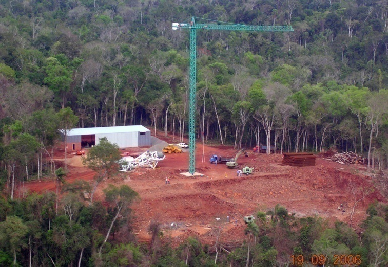
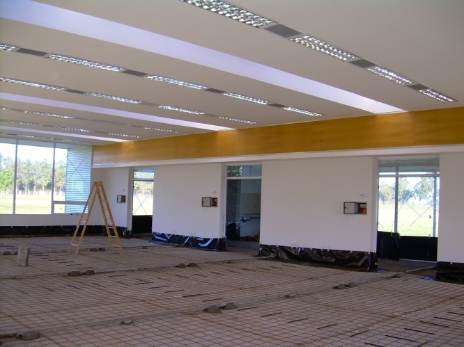
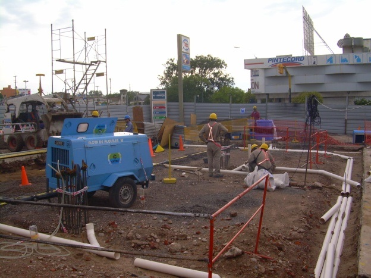

La intervención consistió en la construcción de un Edificio de 7 pisos, tres aterrazados y 4 sobre nivel de piso natural, con lobby en doble altura. El mismo consta de 170 habitaciones, Centro de Convenciones. Además de la remodelación total del edificio existente. La obra se ejecuta llave en mano - Demoliciones - Estructuras - Pisos - Instalación eléctrica - Instalación termomecánica - Instalación sanitaria, incendio y gas - Carpinterías y tabaquería modular - Pintura - Mobiliario - Albañilería en general - Ejecución de ingeniería constructiva - Mudanza - Marmolería - Datos y CCTV - Tabaquerías especiales y de placa de yeso, cielorrasos modulares - etc. Superficie de obra a intervenir aproximada 15.000 m² Plazo: 16 meses
Remodelación de la sucursal de Buenos Aires - Obra llave en mano - Demoliciones - Estructuras - Pisos técnicos - Instalación eléctrica - Aire acondicionado - Instalación sanitaria y gas - Carpinterías y tabaquería modular - Pintura - Mobiliario - Albañilería en general - Ejecución de ingeniería constructiva - Mudanza - Marmolería - Datos y CCTV - Bunker de seguridad - Tabaquería de placa de yeso y cielorrasos modulares - etc.
La intervención consiste en la construcción de un edificio de 4 pisos y dos subsuelos, donde se construirá un nuevo estacionamiento subterráneo y se completaran toda la obra interior del Dock existente. En esta obra actuamos bajo la figura de contratista principal, por lo que tenemos a cargo toda la coordinación de la obra, la seguridad y vigilancia, etc. Superficie de obra a intervenir aproximada 25.000 m²
Instalaciones sanitarias y gas natural. Proyecto, tendido de cañerías interiores, provisión y colocación de artefactos. Construcción
Construcción de aulas y núcleo sanitario compuesto de 3 baños completos. Movimiento de suelos, rellenos y ejecución de 800 m² de patio. Desagües pluviales y cloacales. Carpinterías. Estructura metálica y claraboyas. Pintura general. Construcción
Instalaciones en general. Tendidos de redes de media presión hasta predio. Tendido de cañerías internas con provisión y colocación de artefactos. Refacciones varias. Construcción
Refacciones e instalaciones eléctricas - sanitarias - gas - gas media presión hasta el predio - Cercado del todo el predio del edificio. Construcción
Remodelación y ampliación terminal de pasajeros del Aeropuerto Internacional de Mendoza. La intervención consistió en GERENCIAR la construcción de un Edificio Puente entre el edificio existente y la pista. Además de la remodelación total del edificio existente. La obra se ejecuta llave en mano - Demoliciones - Estructuras - Pisos - Instalación eléctrica - Instalación termomecánica - Instalación sanitaria, incendio y gas - Carpinterías y tabaquería modular - Pintura - Mobiliario - Albañilería en general - Ejecución de ingeniería constructiva - Mudanza - Marmolería - Datos y CCTV - Tabaquerías especiales y de placa de yeso, cielorrasos modulares - etc. Superficie de obra a intervenir aproximada 12.000 m² Plazo: 12 meses

La intervención consistió en la construcción de un Hipermercado ubicado A 1.000 mts. de la bajada a Bancalari de la Ruta 8 superficie cubierta de 18.000 m² de salón, trastienda, locales comerciales, depósitos, servicios, y 12.000 m² de obras exteriores pavimentos de hormigón armado exteriores, parquizaciones, planta de tratamientos, etc. La figura fue la de CONTRATISTA PRINCIPAL por lo tanto se tenía la responsabilidad de todo el cumplimiento del cronograma de las tareas propias y de subcontratista directo de WAL MART. Superficie de obra a intervenir aproximada 30.000 m²
Movimiento de Suelo y Estructura de Hormigon Armado. Construccion con provision de materiales. Sup: 1.350m2 Año de ejecucion 2004-2005 Duracion de la Obra: 8 meses

La obra se ejecuta llave en mano - Demoliciones - Estructuras - Pisos - Instalación eléctrica - Instalación termomecánica - Instalación sanitaria, incendio y gas - Carpinterías y tabaquería modular - Pintura - Mobiliario - Albañilería en general - Ejecución de ingeniería constructiva - Mudanza - Marmolería - Datos y CCTV - Tabaquerías especiales y de placa de yeso, cielorrasos modulares - etc. Superficie de obra a intervenir aproximada 750 m²
Cambio de tanques de combustible - Anexión de GNC - Demoliciones - Estructuras metálicas- Hormigón armado - Pavimentos - Instalación eléctrica - Instalación sanitaria y gas - Carpinterías y tabaquería - Pintura - Instalaciones contra incendio - Albañilería en general - Ejecución de ingeniería constructiva - Bunker de seguridad - etc. Plazo de Obra: 90 días
Remodelación de la sucursal - Obra llave en mano - Demoliciones - Estructuras - Pisos técnicos - Instalación eléctrica - Aire acondicionado - Instalación sanitaria y gas - Carpinterías y tabaquería modular - Pintura - Mobiliario - Albañilería en general - Ejecución de ingeniería constructiva - Mudanza - Marmolería - Datos y CCTV - Bunker de seguridad - Tabaquería de placa de yeso y cielorrasos modulares - etc.
Remodelación de la sucursal de Buenos Aires - Obra llave en mano - Demoliciones - Estructuras - Pisos técnicos - Instalación eléctrica - Aire acondicionado - Instalación sanitaria y gas - Carpinterías y tabaquería modular - Pintura - Mobiliario - Albañilería en general - Ejecución de ingeniería constructiva - Mudanza - Marmolería - Datos y CCTV - Bunker de seguridad - Tabaquería de placa de yeso y cielorrasos modulares - etc.
Albañilería -Instalaciones sanitarias - Eléctricas - Aire acondicionado - Tabaquería modular - Durlock - Cielorrasos - Etc. Dirección ejecutiva y construcción.
La intervención consiste en la demolición de una casa antigua de 180m² y la construcción de un edificio totalmente nuevo incluyendo las siguientes tareas: Obra llave en mano - Demoliciones - Estructuras de HºAº- Pisos - Instalación Eléctrica - Instalación termomecánica - Instalación sanitaria, incendio y gas - Carpinterías y tabaquería modular - Pintura - Mobiliario - Albañilería en general - Ejecución de ingeniería constructiva - Mudanza - Marmolería - Datos y CCTV - Tabaquerías especiales y de placa de yeso, cielorrasos modulares - etc. Superficie de obra a intervenir aproximada 2.100 m² Plazo de Obra: 12 meses
La intervención consiste en la construcción de un Centro de Distribución donde se intervino en todos los edificios civiles a excepción de los galpones y pisos interiores realizados por una empresa subcontratada por WAL MART. Ubicado a 1.000 mts. de la intersección de las rutas 24 y 25 en la localidad de Moreno. El complejo consta de una superficie cubierta 45.000 m² de depósito, 20.000 m² de edificios civiles y 25.000 m² de obras exteriores. Superficie de obra a intervenir aproximada 25.000 m² Plazo de Obra: 5 meses
La intervención consiste en la construcción de un Hipermercado ubicado en la zona sur de la ciudad (circunvalación y O´Higgins) con una superficie cubierta de 12.000 m² de salón, trastienda, locales comerciales, depósitos, servicios, y 13.000 m² de obras exteriores pavimentos de hormigón armado exteriores, parquizaciones, planta de tratamientos, etc. Superficie de obra a intervenir aproximada 25.000 m² Plazo de Obra: 5 meses

Remodelación de la sucursal - Obra llave en mano - Demoliciones - Estructuras - Pisos técnicos - Instalación eléctrica - Aire acondicionado - Instalación sanitaria y gas - Carpinterías y tabaquería modular - Pintura - Mobiliario - Albañilería en general - Ejecución de ingeniería constructiva - Mudanza - Marmolería - Datos y CCTV - Bunker de seguridad - Tabiquería de placa de yeso y cielorrasos modulares - etc. Plazo de Obra: 2 meses

Remodelación de la sucursal - Obra llave en mano - Demoliciones - Estructuras - Pisos técnicos - Instalación eléctrica - Aire acondicionado - Instalación sanitaria y gas - Carpinterías y tabaquería modular - Pintura - Mobiliario - Albañilería en general - Ejecución de ingeniería constructiva - Mudanza - Marmolería - Datos y CCTV - Bunker de seguridad - Tabiquería de placa de yeso y cielorrasos modulares - etc. Plazo de Obra: 2 meses
Obra llave en mano con ingeniería constructiva incluida - Demoliciones - Estructuras - Pisos técnicos - Instalación eléctrica - Aire acondicionado - Instalación sanitaria y gas - Carpinterías y tabaquería modular - Pintura - Mobiliario - Albañilería en general - Ejecución de ingeniería constructiva - Mudanza - Marmolería - Datos y CCTV - Bunker de seguridad - Tabaquería de placa de yeso y cielorrasos modulares - etc. Superficie cubierta 1.400 m² Plazo de Obra: 9 meses
Construcción de estación expendio de GNC y nuevo local de Servicentro. Obra llave en mano con ingeniería constructiva incluida - Superficie cubierta, semi cubierta y descubierta 2.400 m². Plazo de Obra: 90 días
Cabezales de pilotes - excavaciones - Fundaciones y estructura de HAº de caja edificada - Estructura de HAº de alero y bunker elevado - Albañilería en general - Instalación sanitaria - Pintura - etc. Plazo de Obra: 90 días
Remodelación de la sucursal de Buenos Aires - Obra llave en mano - Demoliciones - Estructuras - Pisos técnicos - Instalación eléctrica - Aire acondicionado - Instalación sanitaria y gas - Carpinterías y tabaquería modular - Pintura - Mobiliario - Albañilería en general - Ejecución de ingeniería constructiva - Mudanza - Marmolería - Datos y CCTV - Bunker de seguridad - Tabaquería de placa de yeso y cielorrasos modulares - etc. Plazo de Obra: 4 meses
Cambio de tanques de combustible - Anexión de GNC - Demoliciones - Estructuras metálicas- Hormigón armado - Pavimentos - Instalación eléctrica - Instalación sanitaria y gas - Carpinterías y tabaquería - Pintura - Inst. contra incendio albañilería en general - Ejecución de ingeniería constructiva - Bunker de seguridad - etc. Plazo de Obra: 120 días
Obra llave en mano con ingeniería constructiva incluida - Realizada en 30 días corridos.Finalizada en Marzo 2004
Obra llave en mano con ingeniería constructiva incluida - Realizada en 60 días corridos.Finalizada en Enero 2004
Obra llave en mano con ingeniería constructiva incluida - Realizada en 20 días corridos.Finalizada en Febrero 2004
Anexión de GNC - Demoliciones - Estructuras metálicas- Hormigón armado - Pavimentos - Instalación eléctrica - Instalación sanitaria - Carpinterías y tabaquería - Pintura - Instalación contra incendio - Albañilería en general - Ejecución de ingeniería constructiva - etc. Plazo de Obra: 90 días
Ejecución de pavimentos - Veredas- Desagües pluviales- Hormigón armado Plazo de Obra: 2 meses
Movimiento de suelos - Bases para equipos - plateas para columnas de 40 metros de altura - Sistema integral de puesta a tierra - Pavimentos - Desagües industriales y pluviales - Bunker para compresores- etc. Plazo de Obra: 8 meses
Nueva entrada - Despensa y almacenes - Tribunas de cancha de fútbol con vestuarios - Obra llave en mano con ingeniería propia - Hormigón armado - Albañilería excavaciones - Instalación sanitaria - Pintura - Estructuras metálicas - Carpinterías y herrerías - Vidrios y marmolería - Plazo de Obra: 6 meses
Pilotaje. Demoliciones. Edificio de control y administración llave en mano. Trincheras para cañerías varias - Bases de compresores - Cámaras transformadoras de tensión - Instalación eléctrica antiexplosiva de fuerza motriz e iluminación - Datos - Piletas decantadoras y separadoras. Movimientos de suelos y pavimentos de HªAª. Estructuras metálicas para tinglados, aislaciones poliuretánicas proyectadas, revestimientos y cerramientos de chapas. Instalaciones sanitarias, agua, gas, etc. Plazo de Obra: 12 meses
Replanteos topográficos - Piletas de tratamiento de HºAº - Bases de compresores - Traslado de talleres de mantenimiento - Aperturas de calles y movimientos de suelo - Pavimentación - Bases de racks - Tendido de puesta a tierra de la nueva planta - Albañilería - Tabiquería y cielorrasos - Instalación eléctrica - Datos - Pintura - Etc. Plazo de Obra: 8 meses
Proyecto y tendido de cañerías de hierro soldadas incluyendo la colocación de rociadores. Instalación de Refacción equipos hidroneumáticos. Dirección ejecutiva y construcción.
Reciclaje y refacción de edificio en desuso perteneciente al ferrocarril para transformarlo en Pub. Incluyeron trabajos de albañilería, instalaciones sanitarias, gas, aire acondicionado, eléctricas, decoración y pintura. Dirección ejecutiva y construcción.